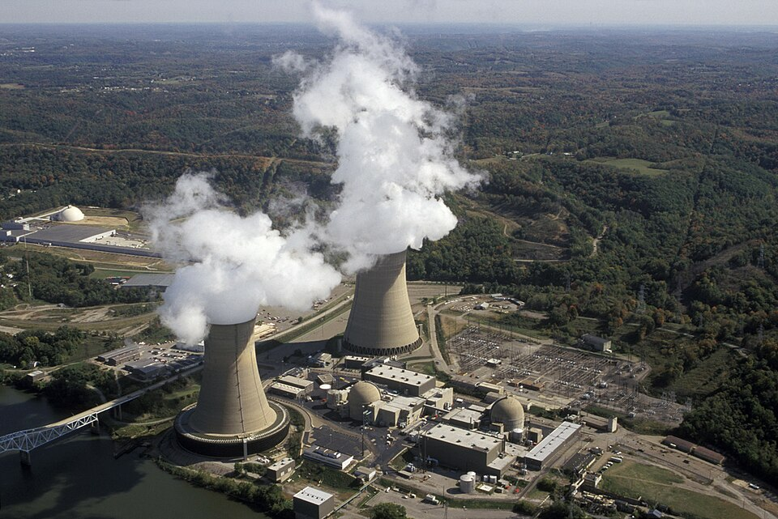

The week in 60 seconds
- 🟢 Uranium — The US Department of Energy's ARPA-E HORNIG programme awarded funding to Westinghouse, Texas A&M, Standard Nuclear, Oregon State University, Oklo and Exodys Energy for projects that recycle transuranic elements from used fuel into fuel for advanced reactors.
- 🟠 Mining — Copper markets are waiting on a US tariff decision, while Grindrod ran its first private test train to Komatipoort and Ivanhoe posted a profitable quarter on record Kamoa-Kakula revenue.
- 🟣 Defense & AI — Half of the US Navy's Japan-based destroyers and the carrier George Washington are deployed to Central Command for the war on Iran, pulling assets from the Pacific.
In Pro that week: This week's Pro deep dives cover the HORNIG fuel awards, the copper tariff wait and the Pacific naval drawdown.
From the Pro issue
🟢 Uranium — US funds projects to recycle used fuel into advanced reactor fuel
What happened: The US Department of Energy's Advanced Research Projects Agency-Energy runs a programme called HORNIG, which opened for applications in April. It funds work to recycle transuranic elements from used nuclear fuel into fuel for advanced reactors. …
The rest of this story, why it matters and what we're watching: Pro
🟠 Mining — Copper trade waits on a US tariff decision
What happened: BMI reports that the global copper market is awaiting a US tariff decision. Separately, Grindrod ran its first test train to Komatipoort as a private train operating company, with operations to start in 2027. …
The rest of this story, why it matters and what we're watching: Pro
🟣 Defense & AI — Iran war pulls US destroyers from the western Pacific
What happened: Five of the 10 destroyers homeported in Yokosuka, along with the carrier George Washington, are deployed to US Central Command's area of responsibility for the war on Iran. Navy officials have told crews of at least some of those destroyers they won't return home until 2027. …
The rest of this story, why it matters and what we're watching: Pro
The rest of this issue is for Pro
- Why it matters and what we're watching, for each of the 3 stories
- The watchlist update: 12 companies
- Next week's calendar (1 date)
- One thing to read
Between issues, Pro also gets a Telegram alert at 7:30 AM or 5:30 PM New York time when a major event hits our sectors (at most one a day).
Sources for this issue
- Next-generation fuel projects get US federal funding · world-nuclear-news.org
- Global copper market awaits US tariff decision, BMI reports · miningweekly.com
- First test train to Komatipoort a success, operations to start in 2027, says new Grindrod Rail boss · miningweekly.com
- Ivanhoe records profitable third quarter, boosted by record revenue at Kamoa-Kakula · miningweekly.com
- Caledonia secures $150m bridge facility for Zimbabwe's biggest gold project · miningweekly.com
- In rail reform milestone, Grindrod becomes first private TOC to run test train · miningweekly.com
- The war on Iran is stripping the western Pacific of US naval forces · defenseone.com
Disclosure, as sent with this issue
The watchlist is built from the largest holdings of three reference ETFs: the VanEck Uranium and Nuclear ETF (NLR), the Sprott Critical Materials ETF (SETM) and the Global X Defense Tech ETF (SHLD). The author holds European-listed ETFs in these three sectors and may therefore indirectly own some of the companies mentioned; see our Disclosure policy.
Metals & Machines publishes general research for informational purposes only. This is not personalized investment advice. Do your own research and consult a licensed advisor before making investment decisions.